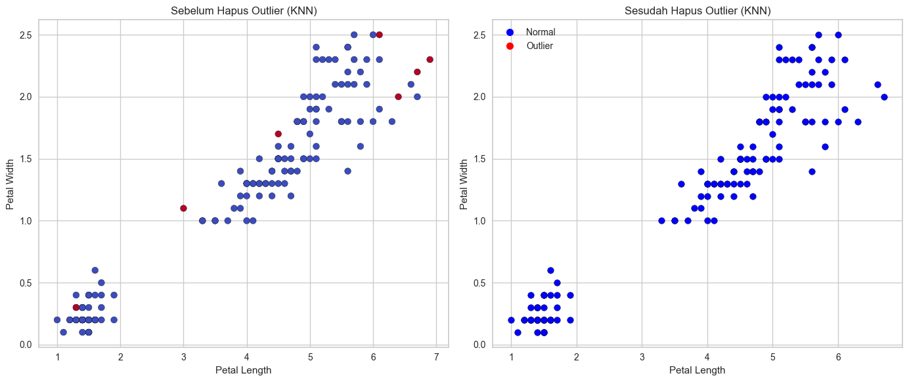
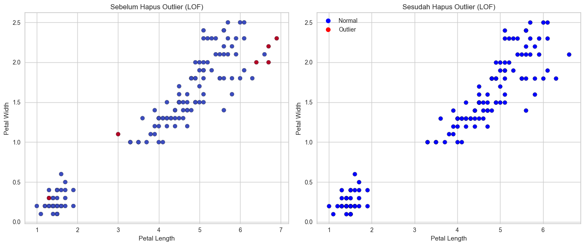

Preprocessing Data Iris#
1. Remove Data Outlier#
1.1 Metode ABOD (Angle-base Outlier Detection)#
1.1.1 Remove Data Outlier Metode ABOD#
import pandas as pd
from pycaret.anomaly import *
import matplotlib.pyplot as plt
# load data
data = pd.read_csv("IRIS.csv")
data = data.drop(columns=["species"])
# setup data PyCaret
s = setup(data)
# membuat model dari metode
abod = create_model('abod')
results = assign_model(abod)
# menghapus data outlier
cleaned_data = results[results["Anomaly"] == 0].copy()
print("Data asli: ", results.shape)
print("Data setelah hapus outlier: ", cleaned_data.shape)
# buat file csv baru
cleaned_data.to_csv("iris_ABOD_cleaned.csv", index=False)
fig, axes = plt.subplots(1, 2, figsize=(14,6))
# Sebelum dihapus data outlier
axes[0].scatter(
results['petal_length'], results['petal_width'],
c=results['Anomaly'], cmap='coolwarm', edgecolor='k'
)
axes[0].set_title("Sebelum Hapus Outlier (abob)")
axes[0].set_xlabel("Petal Length")
axes[0].set_ylabel("Petal Width")
# Sesudah dihapus data outlier
axes[1].scatter(
cleaned_data['petal_length'], cleaned_data['petal_width'],
c='blue', edgecolor='k'
)
axes[1].set_title("Sesudah Hapus Outlier (abod)")
axes[1].set_xlabel("Petal Length")
axes[1].set_ylabel("Petal Width")
handles = [
plt.Line2D([0], [0], marker='o', color='w', label='Normal',
markerfacecolor='blue', markersize=8),
plt.Line2D([0], [0], marker='o', color='w', label='Outlier',
markerfacecolor='red', markersize=8)
]
plt.legend(handles=handles)
plt.tight_layout()
plt.show()
---------------------------------------------------------------------------
FileNotFoundError Traceback (most recent call last)
Cell In[1], line 6
3 import matplotlib.pyplot as plt
5 # load data
----> 6 data = pd.read_csv("IRIS.csv")
7 data = data.drop(columns=["species"])
9 # setup data PyCaret
File C:\Anaconda3\envs\py311\Lib\site-packages\pandas\io\parsers\readers.py:948, in read_csv(filepath_or_buffer, sep, delimiter, header, names, index_col, usecols, dtype, engine, converters, true_values, false_values, skipinitialspace, skiprows, skipfooter, nrows, na_values, keep_default_na, na_filter, verbose, skip_blank_lines, parse_dates, infer_datetime_format, keep_date_col, date_parser, date_format, dayfirst, cache_dates, iterator, chunksize, compression, thousands, decimal, lineterminator, quotechar, quoting, doublequote, escapechar, comment, encoding, encoding_errors, dialect, on_bad_lines, delim_whitespace, low_memory, memory_map, float_precision, storage_options, dtype_backend)
935 kwds_defaults = _refine_defaults_read(
936 dialect,
937 delimiter,
(...) 944 dtype_backend=dtype_backend,
945 )
946 kwds.update(kwds_defaults)
--> 948 return _read(filepath_or_buffer, kwds)
File C:\Anaconda3\envs\py311\Lib\site-packages\pandas\io\parsers\readers.py:611, in _read(filepath_or_buffer, kwds)
608 _validate_names(kwds.get("names", None))
610 # Create the parser.
--> 611 parser = TextFileReader(filepath_or_buffer, **kwds)
613 if chunksize or iterator:
614 return parser
File C:\Anaconda3\envs\py311\Lib\site-packages\pandas\io\parsers\readers.py:1448, in TextFileReader.__init__(self, f, engine, **kwds)
1445 self.options["has_index_names"] = kwds["has_index_names"]
1447 self.handles: IOHandles | None = None
-> 1448 self._engine = self._make_engine(f, self.engine)
File C:\Anaconda3\envs\py311\Lib\site-packages\pandas\io\parsers\readers.py:1705, in TextFileReader._make_engine(self, f, engine)
1703 if "b" not in mode:
1704 mode += "b"
-> 1705 self.handles = get_handle(
1706 f,
1707 mode,
1708 encoding=self.options.get("encoding", None),
1709 compression=self.options.get("compression", None),
1710 memory_map=self.options.get("memory_map", False),
1711 is_text=is_text,
1712 errors=self.options.get("encoding_errors", "strict"),
1713 storage_options=self.options.get("storage_options", None),
1714 )
1715 assert self.handles is not None
1716 f = self.handles.handle
File C:\Anaconda3\envs\py311\Lib\site-packages\pandas\io\common.py:863, in get_handle(path_or_buf, mode, encoding, compression, memory_map, is_text, errors, storage_options)
858 elif isinstance(handle, str):
859 # Check whether the filename is to be opened in binary mode.
860 # Binary mode does not support 'encoding' and 'newline'.
861 if ioargs.encoding and "b" not in ioargs.mode:
862 # Encoding
--> 863 handle = open(
864 handle,
865 ioargs.mode,
866 encoding=ioargs.encoding,
867 errors=errors,
868 newline="",
869 )
870 else:
871 # Binary mode
872 handle = open(handle, ioargs.mode)
FileNotFoundError: [Errno 2] No such file or directory: 'IRIS.csv'
1.1.2 Hasil Preprocessing dengan ABOD#
Setelah dilakukan deteksi outlier menggunakan metode ABOD (Angle-Based Outlier Detection), data dibersihkan dengan cara menghapus baris yang teridentifikasi sebagai outlier.
Jumlah data asli : 150 baris
Jumlah data setelah hapus outlier : 142 baris
Jumlah data yang terdeteksi sebagai outlier : 8 baris
Jadi, sekitar 5,33% data dianggap sebagai outlier dan dihapus dari dataset.
1.2 Metode KNN (k-Nearest Neighbors Detector)#
1.2.1 Remove Data Outlier Metode KNN#
import pandas as pd
from pycaret.anomaly import *
import matplotlib.pyplot as plt
# load data
data = pd.read_csv("IRIS.csv")
data = data.drop(columns=["species"])
# setup data PyCaret
s = setup(data)
# membuat model dari metode
knn = create_model('knn')
results = assign_model(knn)
# menghapus data outlier
cleaned_data = results[results["Anomaly"] == 0].copy()
print("Data asli: ", results.shape)
print("Data setelah hapus outlier: ", cleaned_data.shape)
# buat file csv baru
cleaned_data.to_csv("iris_KNN_cleaned.csv", index=False)
fig, axes = plt.subplots(1, 2, figsize=(14,6))
# Sebelum dihapus data outlier
axes[0].scatter(
results['petal_length'], results['petal_width'],
c=results['Anomaly'], cmap='coolwarm', edgecolor='k'
)
axes[0].set_title("Sebelum Hapus Outlier (KNN)")
axes[0].set_xlabel("Petal Length")
axes[0].set_ylabel("Petal Width")
# Sesudah dihapus data outlier
axes[1].scatter(
cleaned_data['petal_length'], cleaned_data['petal_width'],
c='blue', edgecolor='k'
)
axes[1].set_title("Sesudah Hapus Outlier (KNN)")
axes[1].set_xlabel("Petal Length")
axes[1].set_ylabel("Petal Width")
handles = [
plt.Line2D([0], [0], marker='o', color='w', label='Normal',
markerfacecolor='blue', markersize=8),
plt.Line2D([0], [0], marker='o', color='w', label='Outlier',
markerfacecolor='red', markersize=8)
]
plt.legend(handles=handles)
plt.tight_layout()
plt.show()
| Description | Value | |
|---|---|---|
| 0 | Session id | 953 |
| 1 | Original data shape | (150, 4) |
| 2 | Transformed data shape | (150, 4) |
| 3 | Numeric features | 4 |
| 4 | Preprocess | True |
| 5 | Imputation type | simple |
| 6 | Numeric imputation | mean |
| 7 | Categorical imputation | mode |
| 8 | CPU Jobs | -1 |
| 9 | Use GPU | False |
| 10 | Log Experiment | False |
| 11 | Experiment Name | anomaly-default-name |
| 12 | USI | 6a0e |
Data asli: (150, 6)
Data setelah hapus outlier: (142, 6)

1.2.2 Hasil Preprocessing dengan KNN#
Setelah dilakukan deteksi outlier menggunakan metode KNN (k-Nearest Neighbors Detector), data dibersihkan dengan cara menghapus baris yang teridentifikasi sebagai outlier.
Jumlah data asli : 150 baris
Jumlah data setelah hapus outlier : 142 baris
Jumlah data yang terdeteksi sebagai outlier : 8 baris
Jadi, sekitar 5,33% data dianggap sebagai outlier dan dihapus dari dataset.
1.3 Metode LOF (Local Outlier Factor)#
1.3.1 Remove Data Outlier Metode LOF#
import pandas as pd
from pycaret.anomaly import *
import matplotlib.pyplot as plt
# load data
data = pd.read_csv("IRIS.csv")
data = data.drop(columns=["species"])
# setup data PyCaret
s = setup(data)
# membuat model dari metode
lof = create_model('lof')
results = assign_model(lof)
# menghapus data outlier
cleaned_data = results[results["Anomaly"] == 0].copy()
print("Data asli: ", results.shape)
print("Data setelah hapus outlier: ", cleaned_data.shape)
# buat file csv baru
cleaned_data.to_csv("iris_LOF_cleaned.csv", index=False)
fig, axes = plt.subplots(1, 2, figsize=(14,6))
# Sebelum dihapus data outlier
axes[0].scatter(
results['petal_length'], results['petal_width'],
c=results['Anomaly'], cmap='coolwarm', edgecolor='k'
)
axes[0].set_title("Sebelum Hapus Outlier (LOF)")
axes[0].set_xlabel("Petal Length")
axes[0].set_ylabel("Petal Width")
# Sesudah dihapus data outlier
axes[1].scatter(
cleaned_data['petal_length'], cleaned_data['petal_width'],
c='blue', edgecolor='k'
)
axes[1].set_title("Sesudah Hapus Outlier (LOF)")
axes[1].set_xlabel("Petal Length")
axes[1].set_ylabel("Petal Width")
handles = [
plt.Line2D([0], [0], marker='o', color='w', label='Normal',
markerfacecolor='blue', markersize=8),
plt.Line2D([0], [0], marker='o', color='w', label='Outlier',
markerfacecolor='red', markersize=8)
]
plt.legend(handles=handles)
plt.tight_layout()
plt.show()
| Description | Value | |
|---|---|---|
| 0 | Session id | 257 |
| 1 | Original data shape | (150, 4) |
| 2 | Transformed data shape | (150, 4) |
| 3 | Numeric features | 4 |
| 4 | Preprocess | True |
| 5 | Imputation type | simple |
| 6 | Numeric imputation | mean |
| 7 | Categorical imputation | mode |
| 8 | CPU Jobs | -1 |
| 9 | Use GPU | False |
| 10 | Log Experiment | False |
| 11 | Experiment Name | anomaly-default-name |
| 12 | USI | 5866 |
Data asli: (150, 6)
Data setelah hapus outlier: (142, 6)

1.3.2 Hasil Preprocessing dengan LOF#
Setelah dilakukan deteksi outlier menggunakan metode LOF (Local Outlier Factor), data dibersihkan dengan cara menghapus baris yang teridentifikasi sebagai outlier.
Jumlah data asli : 150 baris
Jumlah data setelah hapus outlier : 142 baris
Jumlah data yang terdeteksi sebagai outlier : 8 baris
Jadi, sekitar 5,33% data dianggap sebagai outlier dan dihapus dari dataset.
import os
import shutil
from IPython.display import display, FileLink, FileLinks
os.makedirs('data', exist_ok=True)
csv_files = ['iris_ABOD_cleaned.csv', 'iris_KNN_cleaned.csv', 'iris_LOF_cleaned.csv']
for file in csv_files:
if os.path.exists(file) and not os.path.exists(f'data/{file}'):
shutil.move(file, f'data/{file}')
print("\nLink download file CSV (Abod, KNN, LOF):")
for file in csv_files:
file_path = f'data/{file}'
if os.path.exists(file_path):
display(FileLink(file_path))
else:
print(f"✗ {file} (belum dibuat)")
Link download file CSV: